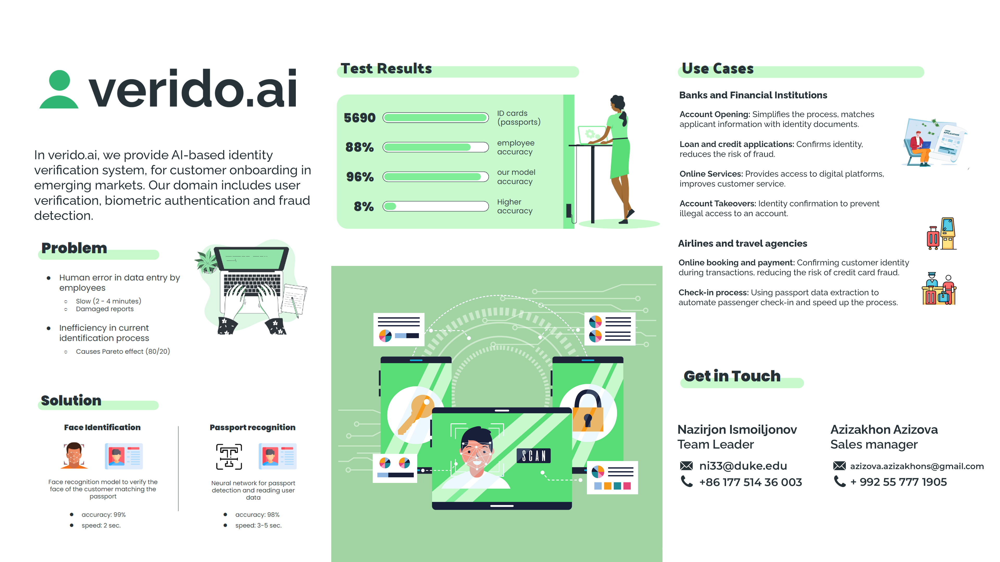

verido.ai is a SaaS startup (Software as a Service) that uses artificial intelligence technology to solve practical issues related to fraud detection, customer verification and registration, and digitization of paper data. We offer banks, telecommunication companies and marketplaces KYC – Know Your Customer solutions using text recognition, facial recognition and liveness check – verification technologies with human emotion identification. verido.ai team consists of graduates of the AI Academy in Tajikistan with expertise in OCR technology and computer vision models.

WE ARE HIRING!
Position 1: Software Engineer
Number of Recruits: 1
Recruitment Demand:
Skills in both Android and iOS development.
Familiarity with current mobile app development frameworks and languages.
Experience in building demo apps for presentations and testing.
Position 2: OCR / Computer Vision Developer
Number of Recruits: 1
Recruitment Demand:
Proficiency in Optical Character Recognition (OCR) or Computer Vision algorithms and frameworks.
Experience in building and optimizing advanced models.
Familiarity with mobile applications and how they integrate with OCR/CV systems.
Previous experience in working on real-world projects and solutions if available.